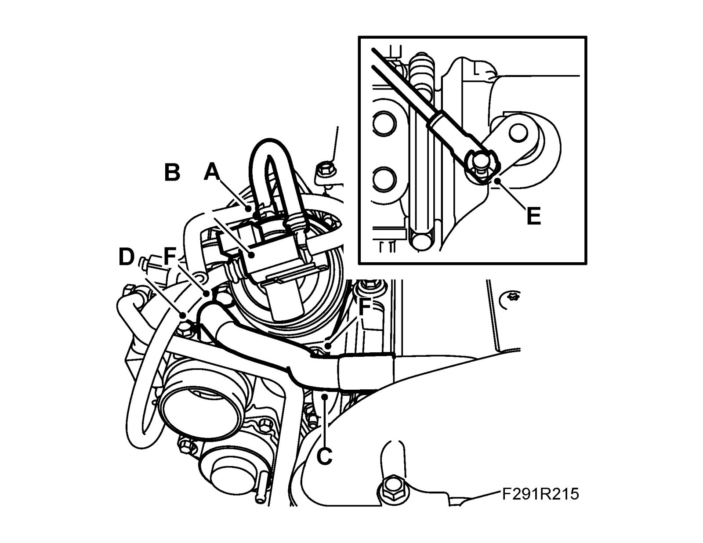
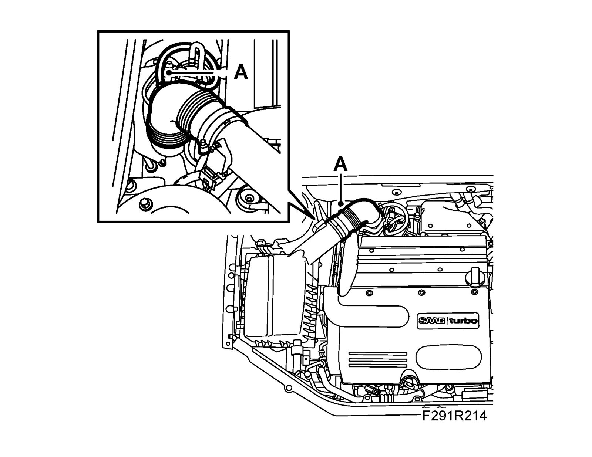

Wastegate: Service and Repair
Wastegate valve, B207To remove
1. Remove Turbo heat shield
2. Detach the intake hose between the turbo and the air cleaner casing (A).

3. Remove the solenoid valve's hose (A) from the wastegate valve.

4. Undo the solenoid valve (B) from the wastegate valve
5. Move the solenoid valve and the intake hose to the side.
6. Remove the crankcase ventilation hose (C) from the camshaft cover and the turbo inlet.
7. Remove the pipe connection for the crankcase ventilation (D).
8. Undo the retaining clip (E) from the turbo control arm. Use tool 8394538.
Note
The clip is not magnetic.
9. Remove the wastegate valve from the turbo (F).
To fit
1. Fit the control rod to the control arm (E).

2. Fit the wastegate valve to the turbo (F)
Note
Clip not magnetic.
3. Fit the retaining clip (E). Use tool 8394538.
4. Fit the pipe connection for the crankcase ventilation (D).
5. Fit the crankcase ventilation hose for the camshaft cover and the turbo inlet (C).
6. Fit the solenoid valve to the wastegate valve (B).
7. Fit the solenoid valve hose to the wastegate valve (A).
8. Fit the intake hose between the turbo and the air cleaner casing.

9. Fit Turbo heat shield.